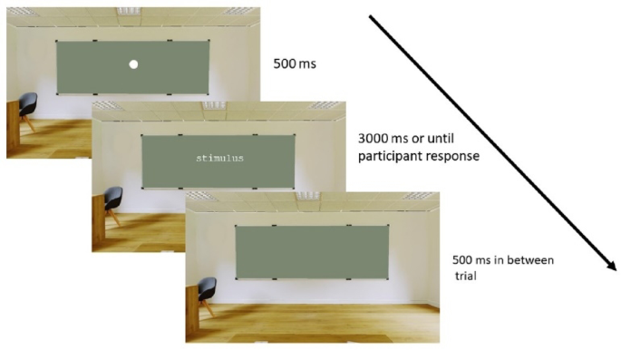

Illustrative image
Illustrative imageCOGNITIVE SCIENCE/ MADRID, ES
Francisco
Rocabado, Ph.D.
Cognitive Scientist · VR Researcher · Experimental Psycholinguist
Exploring human cognition beyond the lab.
I investigate how people perceive, process, and interact with information in the environments around them. My research combines experimental psychology, psycholinguistics, virtual reality, and emerging technologies to develop innovative approaches to studying human cognition.
PUBLICATION WALL01 / 04
Site index
ZONE 02 / ACADEMIC PROFILE
About Me
Francisco Rocabado is a cognitive scientist and experimental researcher whose work investigates how human cognition interacts with language, perception, and environmental information.
Postdoctoral researcher and lecturerCentro de Investigación Nebrija en Cognición (CINC)
Universidad Nebrija · Madrid, Spain
Universidad Nebrija · Madrid, Spain
His research combines experimental psycholinguistics, immersive virtual reality, eye tracking, and computational methodologies to examine cognitive processes in both controlled and naturalistic contexts.
He is particularly interested in how virtual reality can expand experimental research beyond traditional laboratory paradigms and enable richer measurements of human behavior.

ZONE 03 / RESEARCH GALLERY
Research Areas
01Virtual Reality as an Experimental Research Tool
Designing immersive experimental paradigms that combine methodological control with naturalistic behavioral measurements.
Methods
Virtual reality · Immersive environments · Behavioral tracking
Related publications
02Visual Word Recognition and Reading Dynamics

Investigating visual word recognition, lexical processing, orthographic information, and the effects of environmental context on reading behavior.
Methods
Lexical decision · Reading tasks · Eye tracking
Related publications
03Environmental Cognition and Visual Noise

Studying how environmental complexity and visual information influence attention, perception, memory, and cognitive performance.
Methods
360° environments · Mobile eye tracking · YOLO · SAM2 · OpenCV
Related publications
Related project · RENOISE04Cognitive Assessment and Applied Experimental Research

Developing experimental methods to investigate cognition across contexts and populations, with an emphasis on ecological validity and meaningful behavioral measurement.
Methods
Behavioral assessment · Inhibitory control · Ecological validity
Related publications
PROJECT EXHIBITS
Featured Research Projects
RENOISE
Environmental Visual Noise and Cognition
Investigating the effects of visual complexity in everyday environments through virtual reality, computer vision, eye tracking, and cognitive experimentation.
Project details
Everyday scenes bring together many competing sources of visual information. RENOISE uses 360-degree environments and mobile eye tracking to study what people look at. Computer vision tools including YOLO, SAM2, and OpenCV support the analysis of those environments.
Lectura Vial
Reading while driving
How do we read a place name on the road while keeping track of traffic? Lectura Vial will explore how drivers take in written information on a journey.
Project details
A driver may have only a moment to read a sign or a word painted on the pavement. The project will examine reading under those everyday demands. A related paper asks how the order of a destination name split across two lines affects recognition.
Other research projects
Reading with noise and reading as noise: Effects in deliberate and incidental reading
Research team member, provisional award decision
Word reading in multilingual real-life contexts (WOREAD)
Work team member
The impact of rare childhood diseases on families and their social environment (ISERI)
Work team member
Albert Costa network on foreign-language effects related to acculturation (ACELERA)
Research team member
Incidental Vocabulary Learning Across Contexts and Modalities in Bilinguals (INVOLE)
Work team member
Research methods and tools
- Virtual reality
- WorldViz Vizard · SightLab VR · Immersive experiment development · Behavioral tracking
- Programming and analysis
- R · Python · Mixed effects models · Simulation-based power analysis · Data visualization · Reproducible analysis
- Eye tracking and computer vision
- Eye tracking analysis · Gaze behavior · OpenCV · YOLO · SAM2 · Environmental visual analysis
- Experimental platforms
- PsychoPy · Pavlovia · Behavioral experimental paradigms
ZONE 04 / PUBLICATION ARCHIVE
Publications
In press
Journal article · Public Health
Pharmacy Professionals’ Readiness to Address Gender-Based Violence: A Cross-Sectional Study of Knowledge, Attitudes, and Training Needs in Spain
Applied Research
Study details
This cross-sectional study examines how prepared pharmacy professionals in Spain are to respond to gender-based violence. It considers their knowledge, attitudes and training needs.
In press according to the author’s CV.
2026
Journal article · Technology, Mind, and Behavior
Being near home enhances strategic risk taking in immersive environments
Virtual Reality · Environmental Cognition · Experimental Methods
Study details
Twenty-five participants inflated virtual balloons for points in two panoramic scenes, one showing the entrance to their own home and one showing an unfamiliar location. They earned more points in the familiar setting on trials in which balloons could withstand more pumps before bursting.
2026
Journal article · Transportation Research Part F: Traffic Psychology and Behaviour · 121, 103702
When words split on the road: Recognition costs of across-line destination-name order in pavement markings
Psycholinguistics · Environmental Cognition · Applied Research
Study details
Two experiments presented Spanish city names split across two lines of road markings. Participants recognized names faster when the first fragment appeared above the second, both on a plain asphalt background and in a realistic road scene.
2026
Journal article · Scientific Reports · 16, 23958
Naturalistic actions modulate Working Memory prioritization in immersive virtual reality
Virtual Reality · Experimental Methods
Study details
In a virtual memory task, participants responded by moving an object or pressing a button. Moving the object yielded more accurate responses only when a spatial cue had correctly indicated which item would be tested.
2026
Journal article · Bilingualism: Language and Cognition · 1–9
Stormy words: Bilingual emotional lexical access under virtual weather conditions
Virtual Reality · Psycholinguistics · Environmental Cognition
Study details
Forty Spanish–English bilinguals identified the language of words in sunny and rainy virtual scenes. Responses were faster for negative, high-arousal words than for neutral, low-arousal words. Rain slowed responses across languages.
2025
Journal article · Scientific Reports · 15, 23118
Transforming language research from classic desktops to virtual environments
Virtual Reality · Psycholinguistics · Experimental Methods
Study details
Participants decided whether letter strings were words, using the same controllers and matched viewing angles on a monitor and in VR. Both settings produced faster responses to words than to pseudowords. The study detected no reliable difference between displays in response times or error rates.

2025
Journal article · Behavioral Sciences · 15(8), 1051
You Can Stand Under My Umbrella: Cognitive Load in Second-Language Reading
Virtual Reality · Psycholinguistics · Environmental Cognition
Study details
Spanish–English bilinguals identified the language of words shown in VR under different weather and visual masking conditions. Masking slowed responses particularly for Spanish words, while rain slowed responses in both languages.
2025
Journal article · PLOS ONE · 20(7), e0326945
Word recognition during movement under simulated weather conditions
Virtual Reality · Psycholinguistics · Environmental Cognition
Study details
Participants identified and read words aloud on road signs during a virtual journey. They responded more slowly in rain than in sunshine, but recognition accuracy did not differ reliably between weather conditions.
2025
Journal article · Psychological Research · 89(3), 93
Is letter position coding a unique skill for developing and adult readers in early word processing? Evidence from masked priming
Psycholinguistics · Experimental Methods
Study details
Sixth-graders recognized words more readily after a masked cue that swapped two letters than after one that replaced them. Reading skill did not reliably predict the size of this advantage, and a reanalysis of adult data likewise found little association with spelling or vocabulary scores.
2025
Journal article · Psicothema · 37(3), 23–32
ChatGPT Simulated Patient: Use in Clinical Training in Psychology
Applied Research · Experimental Methods
Study details
Thirty-one psychology students practised clinical interviews with ChatGPT acting as a patient. After the simulation they reported less negative affect and greater confidence in their knowledge and skills. Their attitudes toward communication showed no significant change.
2025
Journal article · Cognition and Emotion · 39(7), 1446–1456
Clouded judgments? The role of virtual weather in word valence evaluations
Virtual Reality · Psycholinguistics · Environmental Cognition
Study details
Participants rated the emotional tone of words in sunny and rainy virtual environments. They took slightly longer to respond in the rain, while their ratings of how positive or negative the words felt remained similar across conditions.
Published online in 2024.
2024
Journal article · Scientific Reports · 14, 18538
Tracking the brain signature of (mis)spelled logotypes via letter transpositions and replacements
Psycholinguistics · Experimental Methods
Study details
Participants categorized familiar logos while researchers recorded their electrical brain activity. Swapping two letters elicited an N400 response similar to that of an intact logo. Replacing the same letters produced a larger N400.
2024
Journal article · Frontiers in Psychology · 15, 1433781
Weathering words: a virtual reality study of environmental influence on reading dynamics
Virtual Reality · Psycholinguistics · Environmental Cognition
Study details
Two virtual reality experiments varied text contrast and weather during word recognition and sentence reading. High-contrast words were recognized faster, especially in sunshine. Participants read sentences faster in the sunny scene and made more eye fixations in the rainy scene.

2024
Journal article · Journal of Cognition · 7(1), 67
Dissociating the Effects of Visual Similarity for Brand Names and Common Words
Psycholinguistics · Experimental Methods
Study details
A lexical decision task presented misspellings of both brand names and ordinary words. A visually similar replacement letter made misspelled brands harder to reject. The same manipulation had little effect on responses to misspellings of ordinary words.
2023
Journal article · Computers in Human Behavior · 139, 107563
Exploring the (lack of) facilitative effect of emoji for word processing
Psycholinguistics · Experimental Methods
Study details
Does an emoji that fits the emotional tone of a word help readers process it? Across three experiments, matching emojis yielded no detectable advantage in identifying words, rating their emotional tone or recalling them.
2023
Journal article · Scientific Reports · 13(1), 17817
Misspelled logotypes: the hidden threat to brand identity
Virtual Reality · Psycholinguistics · Applied Research
Study details
Participants encountered familiar logos in a virtual environment. Swapping two letters made the names harder to recognize later, and participants sometimes remembered having seen the correct spelling even after seeing the altered logo.
2022
Journal article · Behavioral Sciences · 12(11), 444
Assessing Inhibitory Control in the Real World Is Virtually Possible: A Virtual Reality Demonstration
Virtual Reality · Experimental Methods · Applied Research
Study details
The researchers adapted the Simon and flanker tasks to a virtual classroom where participants responded to avatars. The Simon task captured interference from conflicting spatial cues in both the virtual classroom and the conventional two-dimensional setup.
2022
Journal article · Brain Sciences · 12(11), 1516
Environment Context Variability and Incidental Word Learning: A Virtual Reality Study
Virtual Reality · Psycholinguistics · Environmental Cognition
Study details
Readers encountered unfamiliar words in stories presented in one virtual classroom or across four differently furnished classrooms. Four assessments of vocabulary learning found no significant disadvantage from changing rooms.
2022
Journal article · Journal of Integrative Neuroscience · 21(1), 10
Cognitive estimation of speed, movement and time across the lifespan
Applied Research · Experimental Methods
Study details
In two online tasks, 18,886 adults aged 18 to 65 made estimates from visual and auditory stimuli. Older participants were generally less accurate, with stronger age differences for judgments of sound duration than for estimates of movement and speed.
2022
Journal article · Memory & Cognition · 50(2), 278–295
Does narrator variability facilitate incidental word learning in the classroom?
Psycholinguistics · Applied Research
Study details
Third-grade pupils listened to fables that introduced unfamiliar words in a single voice or in several voices. The children learned the new words better when different narrators read them.
2021
Journal article · Psychonomic Bulletin & Review · 28(3), 969–977
Does the cowl make the monk? Detecting counterfeits in brand names versus logos
Psycholinguistics · Applied Research
Study details
Three experiments asked readers to judge the spelling of brand names while varying how much of the original logo they could see. Swapped letters were easiest to overlook when the full logo was present.
2022
Proceedings paper · Proceedings of the 33rd European Conference on Cognitive Ergonomics · 1–5
Reproducing Classical Priming, Flanker, and Lexical Decision Tasks in VR: Between ecological validity and experimental control
Virtual Reality · Experimental Methods · Psycholinguistics
Study details
Can a headset reproduce the conditions of standard computer-based experiments? The researchers compared desktop and virtual presentations of three tasks, matching the visual angles of the stimuli and the devices used to respond.
2024
Book chapter · Aprendizaje 4.0: inteligencia artificial, redes sociales y rol docente en la era digital · Dykinson, 701–719
La inteligencia artificial en la enseñanza clínica: un puente hacia experiencias educativas avanzadas
Artificial intelligence in clinical teaching: a bridge to advanced learning experiences
Applied Research
Chapter details
The chapter considers how a language model can play a patient in clinical education. It describes an opportunity for students to practise patient conversations before encountering a similar situation in person.
2024
Book chapter · Educación 360: emociones, tecnología, evaluación e inclusión en la era digital · Dykinson, 1123–1138
Funciones cognitivas y adquisición de segundas lenguas en adultos: un análisis integral de los desafíos y estrategias educativas
Cognitive functions and second-language acquisition in adults: an analysis of challenges and educational strategies
Psycholinguistics · Applied Research
Chapter details
This chapter reviews how working memory and cognitive flexibility contribute to learning a second language as an adult. It discusses how language teachers might take these cognitive demands into account when designing learning activities.
Conference presentations (10)
Words in Motion: The Impact of Real-World Linguistic Stimuli on Bilingual Word Processing
Rocabado, F.
2024 Doctoral Symposium on Cognitive Science: Beyond Averages – Individual Differences in Cognition · Kaiserslautern, Germany
The Invisible Threat: Incidental Processing and the Confusability of Logos
Rocabado, F., Perea, M., & Duñabeitia, J. A.
Sixth Annual Meeting of the Society for the Cognitive Science of Culture · Valencia, Spain
Exploring the Effect of Visual Noise and Simulated Environments through a Language Decision Task
Rocabado, F., Schmitz, G., & Duñabeitia, J. A.
65th Annual Meeting of the Psychonomic Society · New York, United States
Exploring the Impact of Dynamic Visual Environments in Virtual Reality
Alonso-Bernal, N., Rocabado, F., & Duñabeitia, J. A.
65th Annual Meeting of the Psychonomic Society · New York, United States
The Subtle Power of Everyday Words — Incidental Reading in Bilingual Environments
Rocabado, F., Schmitz, G., & Duñabeitia, J. A.
XIV Conference of the Spanish Society for Experimental Psychology (SEPEX) · Almería, Spain
Entre la validez ecológica y el control experimental: la Realidad Virtual como pieza clave
Rocabado, F.
III Jornada de Lenguaje, Educación y Neurociencia · Valencia, Spain
Word processing in 2D and 3D settings: What’s the difference?
Rocabado, F., Muntini, L., Lachmann, T., & Duñabeitia, J. A.
International Convention of Psychological Science (ICPS) · Brussels, Belgium
How can you sell a Mercedes-Benz in the metaverse?
Rocabado, F., & Duñabeitia, J. A.
International Convention of Psychological Science (ICPS) · Brussels, Belgium
Brand Names at Risk: Examining the Vulnerability of Popular Logos to Counterfeiting
Rocabado, F., & Duñabeitia, J. A.
XVI International Symposium of Psycholinguistics · Vitoria-Gasteiz, Spain
Reproducing Classical Priming, Flanker, and Lexical Decision Tasks in VR
Jubran, O. F., Rocabado, F., Muntini, L., Duñabeitia, J. A., & Lachmann, T.
ECCE 2022: 33rd European Conference on Cognitive Ergonomics · Kaiserslautern, Germany
ZONE 05 / CONNECTIONS
Connections through science
Select a country to see coauthors, their affiliations at publication, and the papers we wrote together.
ZONE 06 / TEACHING
Teaching & Mentoring
Teaching
- Research Methodology and Innovation in Education
- ICT in Education
- Psychology of Language
- Adolescent Psychology
Supervision and workshops
- Undergraduate research supervision
- Master’s thesis supervision
- Zotero bibliographic workshops
- Scientific literacy and experimental methodology
Courses and supervision from my CV
Information and Communication Technologies in Education
A 6-ECTS course taught in English in the Primary Education and Early Childhood Education degrees and the dual degree in Primary Education and Psychology.
Methodology, Innovation and Educational Research
A 6-ECTS course taught in English in the Primary Education and Early Childhood Education degrees and the dual degree in Primary Education and Psychology.
Scientific Research in Health Psychology
A 1-ECTS course in the master’s degree in General Health Psychology.
Adolescent Psychology and Education
A 4-ECTS online course in the teacher training master’s programme for secondary, vocational and language education.
Behaviour Modification in the Classroom
A 6-ECTS course in the dual degree in Primary Education and Psychology.
Undergraduate thesis supervision
Research design and methodological guidance for undergraduate projects.
Master’s thesis supervision
Supervision of research design, data analysis and reporting.
Laboratory internships
Training in experimental protocols, immersive technologies and experiment programming.
Undergraduate examination boards
Evaluation of final undergraduate research projects and their oral defence.
Master’s examination boards
Evaluation of master’s dissertations and their public defence.
Zotero workshops
English-language workshops on reference management for undergraduate and master’s students.
ACADEMIC JOURNEY
Education & Collaboration
2025
Ph.D. in Education and Cognitive Processes
Universidad Nebrija · Cum Laude and International Mention
Collaboration
Research experience and international collaboration
- Universidad NebrijaSpain
- Universitat de ValènciaSpain
- Bournemouth UniversityUnited Kingdom
- RPTU Kaiserslautern-LandauGermany
- Skidmore CollegeUnited States
- Pontificia Universidad Católica del PerúPeru
Education and appointments
Postdoctoral researcher (tenure track)
Centro de Investigación Nebrija en Cognición (CINC), Universidad Nebrija
Predoctoral researcher, Banco Santander training contract
Universidad Nebrija
Research assistant
Universitat de València
Ph.D. in Education and Cognitive Processes, Cum Laude with International Mention
Universidad Nebrija
Master’s degree in General Health Psychology
Universidad Católica de Valencia
Diploma in Cognitive Stimulation in Dementia
Universitat de València
Bachelor’s degree in Psychology
Universidad Católica de Valencia
Knowledge transfer and academic service
- With the Dravet Syndrome European Federation, he worked on the design and multilingual validation of QoLADS, a quality-of-life measure for children with Dravet syndrome and their caregivers.
- During Healthy Aging and Longevity Week in Madrid in November 2025, he spoke to adults over 50 about cognitive reserve and brain health.
- He contributed to Lab to Classroom workshops with Colegio Padre Manyanet and Universidad Nebrija, presented educational research tools at Madrid es Ciencia in 2022 and demonstrated virtual reality research at Madrid Science Week.
- He helped organize the International Symposium of Psycholinguistics in Madrid and the sixth annual meeting of the Society for the Cognitive Science of Culture in Valencia in 2024.
- He contributed to the development of AI-based patient simulations for psychology students to practise clinical skills. The work was published in a book chapter and in Psicothema.
Recent Highlights
AWARD
2025 Best PhD Thesis Award
Behavioral Sciences recognized my doctoral thesis with its 2025 award. The journal ranks in Q1 for Multidisciplinary Psychology in the 2025 Journal Citation Reports.
ACADEMIC SERVICE
Academic Editor at PLOS ONE
I serve as an Academic Editor for PLOS ONE.
ACADEMIC SERVICE
Peer review
Scientific Reports · Virtual Reality · Quarterly Journal of Experimental Psychology · Cognition and Emotion
ZONE 07 / CONTACT
Let’s Explore New Ways of Studying Cognition
I welcome opportunities for academic collaboration, scientific exchange, and the development of innovative experimental approaches to studying human cognition.
jrocabado@nebrija.esCentro de Investigación Nebrija en Cognición (CINC)
Universidad Nebrija
Madrid, Spain
I am as much as I am in the wonders of my mind